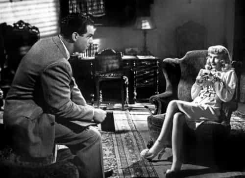
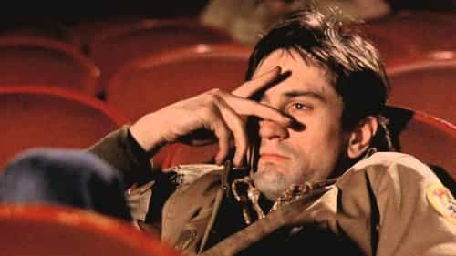
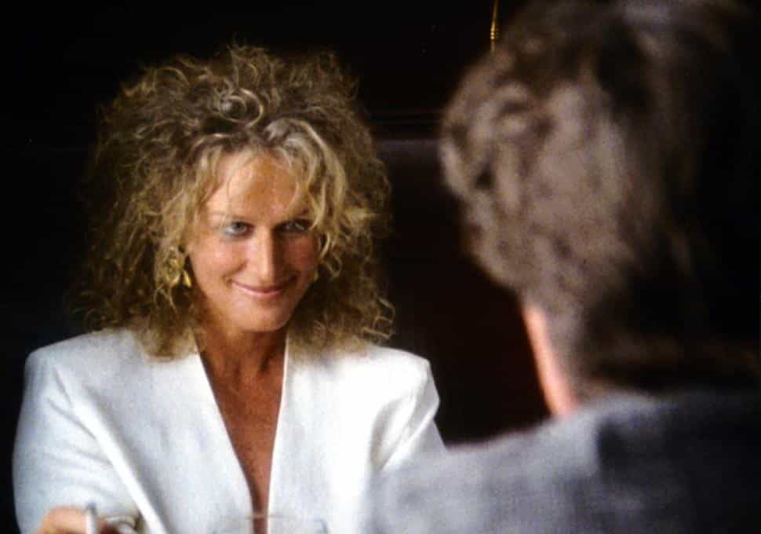
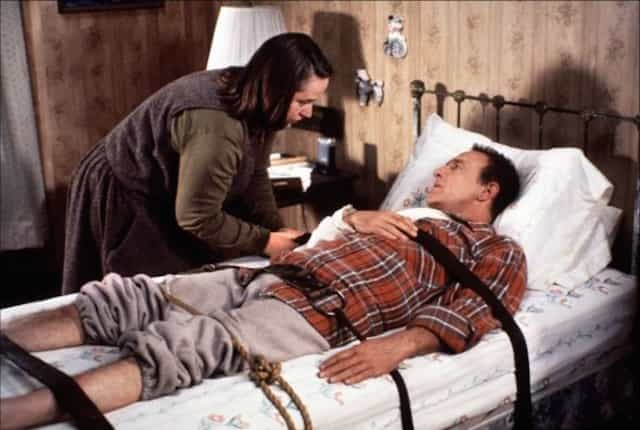
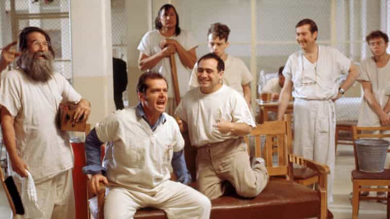
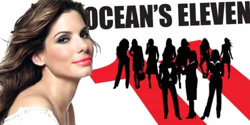

Corey is an iconoclast and the author of 'Man's Fight for Existence'. He believes that the key to life is for men to honour their primal nature. Visit his new website at primalexistence.com


During the past few decades Hollywood films have become more about making money through their cookie-cutter formula than about creating drama that is artistic and meaningful. And not only that, the themes too have been degenerated to both reflect and direct the cultural trends. The films they propagate today are rife with “progressive” ideas on race, sex, and culture that attempt to undermine the existing values. It is sad really, because things weren’t always like that with Hollywood. If you watch films from the not too distant past, you’ll discover that they were much more different and in touch with true human nature. And to illustrate, I present the following classic films that would most likely not be made today.

This is a classic film-noir which I’ve enjoyed far more than the other films from that era with bigger names including Casablanca and Citizen Kane. It’s about an insurance salesman who falls for a married woman wishing to get rid of her rich husband. They both plot to secretly murder him and make it look like an accident after tricking him into signing a life insurance. The story that unfolds will shock even the most hardcore redpiller.
Why it won’t be made today: The film reveals far too much of how a toxic woman can destroy men by her using her feminine power to lure them—a truth that women don’t like men knowing. Besides, today’s Hollywood is working hard to erase femininity from the females characters in general, preferring to turn them all tough and masculine. Even the few female villains that appear on screen today are violent, aggressive, and domineering like men. You’ll be hard-pressed to find any bad woman in today’s movies who uses her feminine wiles to ruin a good man.

Has there been a film since the Taxi Driver that so accurately portrays raw male vexation and alienation? (I think Falling Down is the only one that even comes close). Alone, depressed, and angry, suffering from insomnia and possible trauma from the Vietnam war, Travis Bickle works as a taxi driver in the urban filth and degeneracy that is New York.
As the movie progresses, three things happen: one, he grows more and more disturbed, two, he meets a young teenage prostitute, and three, he becomes infatuated with a gorgeous upper middle class blonde volunteering in an election campaign. When the relationship with the woman fails—the only thing that seemingly gave him hope and stability—he finally starts to spiral down to madness.
Why it won’t be made today: People today don’t want to watch depressing films that depict loneliness, cynicism, and dejection—especially that of a man who’s been abandoned by the society. No. People don’t care for a man’s pain and destitution. Instead, the movie-goers want to enjoy the vicarious thrill of watching the lives of affluent heroes who have it all. They want to sit and see beautiful people getting their guaranteed happy ending. The audience today just want to be sedated in a dream world where they don’t have to face up to their own problems and that of the world.

An epic gangster film by no other than the great Sergio Leone. It’s a story of crime and friendship in the early 20th century America. The film is both gripping and real; it’s strange how a crime film can make you feel so human. By the time the movie is over, you will feel as though you just lived through an entire era.
Why it won’t be made today: Films like this and Stand by Me won’t be made today for the simple fact that they’re not inclusive enough. Besides, when is the last time Hollywood made a film about true friendship among men? If and when they do appear once in a moonlight, it’s usually goofy comedies like Harold and Kumar or The Hangover. Also, Once Upon a Time in America features scenes of raw violence against women including two rape scenes (in the first one, the woman clearly enjoys it) that will be derided by the triggered harpies.

Truth be told, I haven’t watched this film, but I’ve heard about it enough to know what it’s about. A married man has an affair with a post-wall career woman who turns out to be a batshit insane BPD psycho from hell (the term “bunny-boiler” originates from this film). She becomes increasingly obsessive and starts to stalk him, only to become more erratic in her behavior as she’s pushed away.
Why it won’t be made today: For the straight-forward reason that it is now politically incorrect to show that a woman can be emotionally unstable and “crazy”—especially an aging one who is unmarried with a proud career, attempting to destroy a man and his family. I guess the film would remind the feminists too much of their own nature.

A novelist gets into a car accident in middle of nowhere and is rescued by an obsessed female fan who keeps him at her remote cabin. As he recovers, he finds out that she’s a sick and disturbed woman who gets more controlling and more possessive.
Why it won’t be made today: Same reason as Fatal Attraction: women on screen today can no longer be seen as deranged, possessive, or two-faced. The way Kathy Bates’s character dies would also be considered too misogynistic although I doubt any man or woman would hesitate to do the same when forced in the situation portrayed in the film.

I don’t think you have to be an expert film-goer to see that the nut house in the film symbolizes a matriarchal society that keeps men under control. In the story, Nurse Ratchet is in the ultimate position of power even though the (feeble) male doctors are technically on top. She clearly enjoys her dominance and sees Jack Nicholson’s character as a challenge to her rule.
Why it won’t be made today: A lowly man challenging female authority? That is absurd in today’s political climate. Why would Hollywood try to incite male insurrection when they’re too busy making films about masculine women fighting against the Patriarchy?
This lesser known cult classic was one of the more bizarre films I’ve seen. This is a story about a boy and his telepathic dog who scavenge the post-apocalyptic wasteland in search of a girl that will satisfy his sexual urges. If you watch the film with red pill scrutiny, you can see the male-female power dynamic playing out throughout the film.
Why it won’t be made today: In a savage world where civilization is no more, women are depicted as being only good for sex by the roaming young men. With no more government to cater to their needs and no air-conditioned corporate buildings left to hide in, it is a true nightmare for the modern women. I won’t say too much to avoid spoiling the film for those who want to watch it, but the ending is also something unprecedented in the history of films.
“They call me a chauvinist pig. I am, and I don’t give a damn.”
I don’t like idolizing actors, but if there’s one man in Hollywood history whose aura that I would love to adopt for myself, it is Steve McQueen. He is unapologetically masculine and his movies, including The Getaway, Papillon, and Thomas Crown Affair, reveal too much red pill truth. I don’t think Hollywood would completely avoid making his films today, but they would definitely shy away from them or at least water them down with correctness. The Getaway and Thomas Crown Affair already have remakes and apparently they’re planning a one for Papillon as well (I can’t imagine how awful it will turn out.)

I expect Hollywood to continue pushing the feminist and diversity agenda, turning the female characters butch and unfeminine while reducing the male characters to goofy betas or sidekicks that follow women around like dogs. I avoid most of their new releases, but the problem comes when the men and women who watch these films internalize the messages and start thinking, talking, and acting accordingly—the culture will change even if we choose to disengage. The Hollywood of today must be recognized as the cultural cancer that is spreading its decadence around the world, which is why I urge other men to boycott them.
Read More: 10 Hollywood Films For Men That Leave Today’s SJW Movies In The Dust